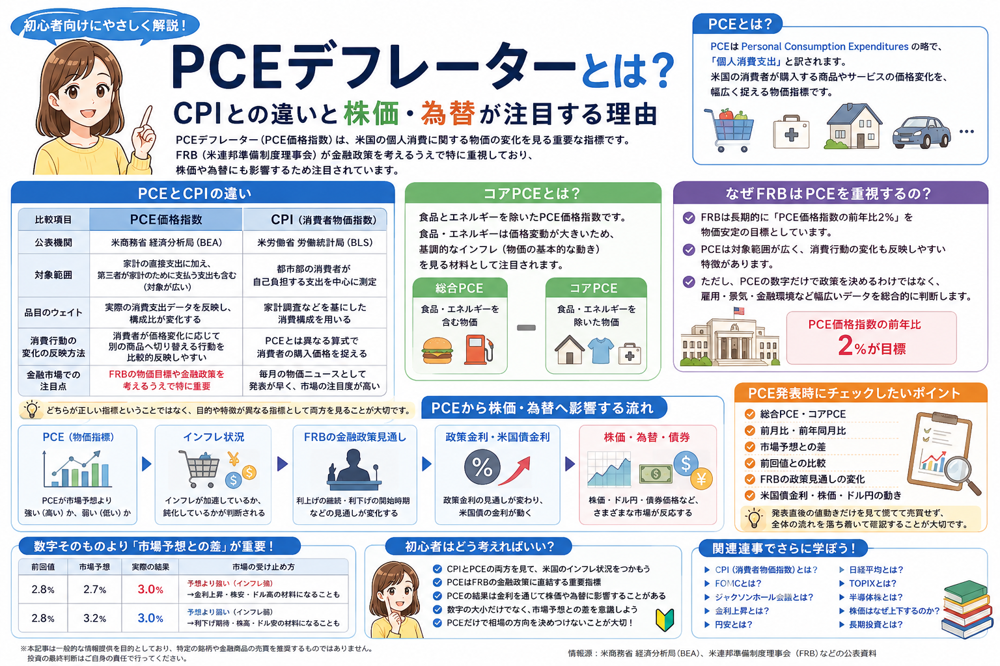

話題・トレンド
PCEデフレーターとは？CPIとの違いと株価・為替が注目する理由を初心者向けに解説
米国の物価ニュースでは「CPI」と並んで「PCE」「コアPCE」という言葉がよく登場します。 PCE価格指数はFRBが物価動向を判断するうえで重要視している指標の一つで、 発表結果によって政策金利の見通しが変化し、株価・債券・ドル円などが動くことがあります。 ただし、PCEの数字だけで相場やFRBの政策が決まるわけではありません。
Overview
PCEデフレーターとCPI・FRB・金利・株価・為替の関係

- PCE価格指数は米国の個人消費に関する物価変動を見る指標です。
- CPIと似ていますが、対象範囲や品目のウェイトなどに違いがあります。
- FRBは長期的な物価目標をPCE価格指数を基準に示しています。
- PCE発表は金利見通しを通じて株価・債券・為替へ影響することがあります。
- 発表結果を見るときは「前回値・市場予想・実際の結果」の3つを比較することが大切です。
Definition
PCEデフレーターとは？
PCEデフレーターは、米国の個人消費に関する物価の変化を見るための経済指標です。 現在の米国の公式統計では「PCE price index（PCE価格指数）」という名称が使われ、 日本の金融ニュースでは「PCEデフレーター」「PCE価格指数」「PCE物価指数」などと表現されることがあります。
PCEとは
Personal Consumption Expenditures
PCEはPersonal Consumption Expendituresの略で、 日本語では「個人消費支出」と訳されます。 米国で消費者が商品やサービスへどれだけ支出したかを見る統計です。
PCE価格指数とは
個人消費に関する価格変化を見る
PCE価格指数は、米国の消費者が購入する商品・サービスの価格が どの程度変化したかを幅広く捉えます。 インフレやデフレの状況を確認する代表的な指標の一つです。
誰が発表しているの？
PCE価格指数は、米商務省の 経済分析局（Bureau of Economic Analysis：BEA） が「Personal Income and Outlays（個人所得・支出）」の統計の中で毎月公表しています。
「PCE」と「PCE価格指数」は同じ意味？
厳密には同じではありません。PCEそのものは個人消費支出を指し、 PCE価格指数はその消費に関する価格変化を見る指標です。 ただし金融ニュースでは、物価の話題の中で単に「PCE」と略して PCE価格指数を指すことがあります。
初心者向けポイント： ニュースで「PCEが上昇した」と書かれている場合は、 「個人消費の金額が増えた」という意味なのか、 「PCE価格指数が上昇した」という意味なのかを確認すると混乱しにくくなります。
PCE vs CPI
PCEとCPIは何が違う？
PCE価格指数とCPI（消費者物価指数）は、どちらも米国のインフレを見る重要な指標ですが、 対象範囲や計算方法には違いがあります。 「どちらが正しい物価指標なのか」ではなく、 異なる方法で物価の動きを確認する指標と理解すると分かりやすくなります。
| 比較項目 | PCE価格指数 | CPI |
|---|---|---|
| 指標 | 個人消費に関する商品・サービスの価格変化を見る | 消費者が購入する商品・サービスの価格変化を見る |
| 公表機関 | 米商務省 経済分析局（BEA） | 米労働省 労働統計局（BLS） |
| 対象範囲 | 家計の直接支出だけでなく、家計のために第三者が支払う支出も含むなど比較的広い | 都市部の消費者が自己負担する支出を中心に測定 |
| 品目のウェイト | 実際の消費支出データを反映し、構成比が変化する | 家計調査などを基にした消費構成を用いる |
| 消費行動の変化 | 消費者が価格変化に応じて別の商品へ切り替える行動を比較的反映しやすい | PCEとは異なる算式で消費者の購入価格を捉える |
| 金融市場での注目点 | FRBの物価目標や金融政策を考えるうえで特に重要 | 毎月の物価ニュースとして早く発表され、市場の注目度が非常に高い |
※ スマートフォンでは横にスクロールできます。
CPIは生活者が感じる物価変化を考えるうえで重要で、 PCEはFRBの金融政策や米国経済全体の物価動向を見るうえで重要です。 両方を見ることで、米国のインフレ状況をより立体的に理解しやすくなります。
Core PCE
コアPCEとは？
PCEニュースでは「総合PCE」と一緒に「コアPCE」という数字が紹介されることがあります。 両者を混同しないことが大切です。
総合PCE
食品・エネルギーを含めた物価
消費者が購入する商品・サービスを幅広く含みます。 ガソリンや食品などの価格変化も含まれるため、 家計が実際に直面する物価変動を確認する材料になります。
コアPCE
食品・エネルギーを除いた物価
食品とエネルギーは天候、原油価格、国際情勢などによって 短期間で大きく変動することがあります。 それらを除くことで、基調的なインフレを見る材料として利用されます。
コアPCEが「本当のPCE」という意味ではありません。 総合PCEとコアPCEは目的が異なり、 市場では両方の動きが確認されます。
Federal Reserve
なぜFRBはPCEを重視するの？
PCEが金融市場で特に注目される大きな理由は、 米国の中央銀行制度であるFRBが物価安定を考えるうえで PCE価格指数を重要な指標としているためです。
FRBには物価安定の役割がある
FRBは最大雇用と物価安定などの責務を踏まえて金融政策を運営します。 インフレがどの程度進んでいるかは重要な判断材料です。
2％の物価目標
FRBは長期的に、PCE価格指数の前年比で2％のインフレ率が 物価安定などの目標と整合的だとしています。
幅広い消費を捉える
PCEは対象範囲が比較的広く、 消費者が価格変化に応じて購入先や商品を変える動きも反映しやすい特徴があります。
重要： FRBは「PCEの数字だけ」を見て利上げ・利下げを決めるわけではありません。 雇用統計、賃金、景気、金融環境、インフレ期待など 幅広いデータを確認して金融政策を判断します。
Monetary Policy
PCEとFOMC・政策金利の関係
PCEが株価や為替につながる流れは、 「PCEの数字が直接株価を動かす」と考えるより、 インフレと政策金利の見通しを変化させると考えると理解しやすくなります。
インフレが強いと判断された場合
市場では「FRBが高い金利を長く維持するのではないか」 「利下げ開始が遅れるのではないか」といった見方が強まる場合があります。 その結果、米国債金利や株価、ドルの値動きへ波及することがあります。
インフレが弱いと判断された場合
市場では利下げへの期待が強まる場合があります。 ただし、物価低下の背景が景気悪化であれば、 株式市場が必ず好感するとは限りません。
Stock Market
なぜPCE発表で株価が動くの？
PCEの結果によってFRBの金融政策や米国金利の見通しが変化すると、 株式の評価にも影響するためです。
予想よりインフレが強い
高金利が長引くとの見方が強まる場合
市場予想よりPCEが強ければ、 利下げ期待が後退したり米国債金利が上昇したりする場合があります。 特に将来の利益への期待が大きい成長株は、金利変化に敏感になることがあります。
予想よりインフレが弱い
利下げ期待が強まる場合
物価上昇が落ち着いていると受け止められれば、 将来の利下げを期待する動きが強まり、 株式市場にプラス材料として受け止められる場合があります。
「PCE上昇＝必ず株安」「PCE低下＝必ず株高」ではありません。 景気、企業業績、市場予想、FRBの発言、すでに株価へ織り込まれていた期待などによって 反応は変わります。
Foreign Exchange
なぜPCE発表で為替が動くの？
為替市場ではPCEそのものだけでなく、 PCEを受けてFRBの政策金利見通しや米国債金利がどう変化するかが注目されます。
-
PCEが発表される
総合PCE・コアPCE、前月比・前年比などを市場予想と比較します。
-
FRBの金融政策見通しが変化する
インフレが予想より強ければ高金利継続、 弱ければ利下げへの期待が意識される場合があります。
-
米国債金利が反応する
金利見通しの変化を反映して、短期・長期の米国債利回りが動くことがあります。
-
ドルの需要が変化する
米国金利の相対的な魅力が変わると、ドル買い・ドル売りの材料になる場合があります。
-
ドル円にも影響する
日本の金利や日銀の政策も含め、日米金利差への見方が変化すると ドル円相場が大きく動く場合があります。
「PCEが高い＝必ず円安」ではありません。 日本側の金融政策、米国景気、市場のリスク回避、 それまでのドル円のポジションなども為替を動かします。
Market Expectations
数字そのものより「市場予想との差」が重要
経済指標を見るときに初心者が覚えておきたいのが、 市場は「数字が高いか低いか」だけでなく、 事前に予想されていた数字との差に反応するという点です。
例1
PCE 3.0％・市場予想 2.7％
実際のPCEが3.0％でも、市場予想が2.7％なら 「予想よりインフレが強かった」と受け止められます。
例2
PCE 3.0％・市場予想 3.2％
同じ3.0％でも、市場予想が3.2％なら 「予想よりインフレが弱かった」と受け止められます。
前回値
前の月からインフレが加速したのか、鈍化したのかを確認します。
市場予想
発表前に市場がどの程度の数字を想定していたのかを確認します。
実際の結果
市場予想とのズレが大きいほど、金利や株価、為替が動く材料になりやすくなります。
経済指標発表後に「良い数字なのになぜ株価が下がったの？」と感じる場合は、 まず市場予想との差を確認すると理由を整理しやすくなります。
CPI and PCE
CPIとPCE、初心者はどちらを見ればいい？
結論として、どちらか片方だけに絞る必要はありません。 CPIとPCEにはそれぞれ異なる特徴があり、 両方を見ることで米国の物価状況を理解しやすくなります。
CPI
毎月の物価ニュースで頻繁に登場
CPIは発表時期が比較的早く、市場の注目度も非常に高い指標です。 米国のインフレが加速しているか、鈍化しているかを見る代表的な材料になります。
PCE
FRBの金融政策を見るうえで重要
FRBが長期的な物価目標の基準としているため、 金融政策や政策金利の見通しを考えるうえで特に重要です。
News Checklist
初心者がPCEニュースを見るポイント
PCE発表時にすべての数字を追う必要はありません。 まずは次の項目を順番に確認すると整理しやすくなります。
01
総合PCE
食品・エネルギーを含む物価全体の動きを確認します。
02
コアPCE
食品・エネルギーを除き、基調的なインフレを確認します。
03
前月比
直近1カ月で物価がどの程度変化したかを確認します。
04
前年同月比
1年前と比べて物価がどの程度上昇しているかを確認します。
05
市場予想との差
数字そのものだけでなく、発表前の予想より強かったか弱かったかを見ます。
06
前回値との比較
インフレが加速しているのか、鈍化しているのかを確認します。
07
FRBの政策見通し
利上げ・据え置き・利下げへの市場の予想がどう変わったかを確認します。
08
米国債金利
PCE発表後に米国の国債利回りがどの方向へ反応したかを確認します。
09
株価
米国株や成長株だけでなく、日本株など世界の市場への波及も確認します。
10
ドル円
米国金利や日米金利差への見方が為替へどう反映されたかを確認します。
PCE発表直後はアルゴリズム取引やポジション調整なども重なり、 株価や為替が短時間で上下することがあります。 最初の値動きだけを見て慌てて売買する必要はありません。 数字、市場予想、金利、FRBの見通しを順番に確認することが大切です。
Latest PCE
直近のPCEが注目される理由
記事公開時点では、次回の米国「Personal Income and Outlays」は 2026年8月26日午前8時30分（米東部時間）に公表予定で、 2026年7月分のPCE価格指数が発表されます。
直近6月分では総合PCEが前年比3.7％
BEAが公表した2026年6月分では、 PCE価格指数は前月比0.1％低下、前年同月比3.7％上昇しました。 食品・エネルギーを除くコアPCEは前月比0.1％上昇、 前年同月比3.3％上昇でした。
FRBの2％目標との距離が注目されている
FRBは長期的にPCE価格指数の前年比2％を物価安定の目標としています。 2026年7月の金融政策報告でも、インフレは2％の長期目標を上回る状態として説明されており、 今後インフレがどのように推移するかが金融政策を考える重要な材料となっています。
次回7月分は金利見通しを考える材料の一つ
8月26日に予定されている7月分の発表では、 総合PCEとコアPCEがどのように変化したかが確認されます。 発表結果はFRBの政策金利見通しを考える材料になるため、 米国債金利、米国株、ドル円などでも注目される可能性があります。
情報源： 米商務省経済分析局（BEA）「Personal Income and Outlays」「PCE Price Index」、 Federal Reserve「Monetary Policy Report」「Statement on Longer Run Goals」。 発表日・数値は今後の改定や新しい統計公表によって更新される場合があります。
Related Articles
PCEと一緒に読みたい関連記事
PCEを理解した後は、 「CPI → PCE → FOMC → 金利 → 株価・為替」 の順番で学ぶと、米国経済ニュースのつながりを理解しやすくなります。
FAQ
PCEデフレーターに関するよくある質問
-
PCEデフレーターとは何ですか？
PCEデフレーター、一般にPCE価格指数とは、 米国の消費者が購入する商品やサービスの価格変化を幅広く捉える物価指標です。 米商務省経済分析局（BEA）が公表しています。 -
PCEは何の略ですか？
PCEはPersonal Consumption Expendituresの略で、 日本語では「個人消費支出」と訳されます。 なお、PCEそのものとPCE価格指数は厳密には別の統計です。 -
CPIとPCEの違いは何ですか？
どちらも米国の物価を見る指標ですが、 対象範囲、品目のウェイト、消費行動の変化を反映する方法などが異なります。 CPIは物価ニュースで頻繁に利用され、 PCEはFRBの金融政策を見るうえで特に重要です。 -
コアPCEとは何ですか？
コアPCEは、PCE価格指数から価格変動の大きい食品とエネルギーを除いた指標です。 一時的な価格変動の影響を抑え、 基調的なインフレを確認する材料として注目されます。 -
なぜFRBはPCEを重視するのですか？
FRBは長期的なインフレ目標をPCE価格指数の前年比で示しているためです。 ただしPCEだけで政策を決めるわけではなく、 雇用、賃金、景気、金融環境など幅広い情報を確認します。 -
PCEが上がると株価は下がりますか？
必ず下がるわけではありません。 市場予想との差、FRBの政策見通し、米国債金利、 景気、企業業績、すでに株価へ織り込まれている期待などによって反応は変わります。 -
PCEが高いと円安になりますか？
必ず円安になるわけではありません。 PCEを受けたFRBの政策金利見通しや米国金利、 日本の金融政策、日米金利差、市場全体の動きなど複数の要因がドル円へ影響します。 -
PCEはいつ発表されますか？
PCE価格指数は米商務省経済分析局（BEA）の 「Personal Income and Outlays」の中で原則毎月発表されます。 記事公開時点では、次回の2026年7月分は 2026年8月26日午前8時30分（米東部時間）に公表予定です。 発表日は変更される可能性があるため、最新の日程はBEAの公式発表を確認してください。
Summary
まとめ｜PCEはFRB・金利・株価・為替をつなぐ重要な物価指標
- PCEは米国の個人消費に関する物価変動を見る重要な指標です。
- PCEはPersonal Consumption Expenditures（個人消費支出）の略です。
- CPIとPCEは対象範囲やウェイト、計算方法などに違いがあります。
- コアPCEは食品・エネルギーを除き、基調的なインフレを見る材料です。
- FRBはPCE価格指数を長期的な2％の物価目標の基準としています。
- PCEは金利見通しを通じて株価・債券・為替へ影響することがあります。
- 発表結果は数字だけでなく「前回値・市場予想・実際の結果」を比較することが重要です。
- PCEが上昇したから必ず株安・円安になると決めつけることはできません。
- FRBもPCEだけで金融政策を決定するわけではなく、雇用や景気など幅広い情報を確認します。
Next Step
CPIからFOMC・金利までつなげて学ぶ
米国の経済ニュースは一つの指標だけを見るより、 CPIとPCEでインフレを確認し、 FOMCで金融政策を確認し、 金利・株価・為替へどうつながるかを順番に理解すると読みやすくなります。
ご利用にあたっての注意事項
本記事は一般的な情報提供と金融教育を目的としており、 特定の企業・銘柄・金融商品・通貨の売買を推奨するものではありません。 経済指標発表後の株価・金利・為替の反応は、 市場予想、景気、金融政策、投資家心理、国際情勢など複数の要因によって変化します。 掲載している経済指標や発表予定は改定・変更される場合があるため、 最新情報はBEA、FRBなどの公式情報をご確認ください。 投資・取引を行う際は、リスクを十分に理解したうえで、 ご自身の判断と責任で行ってください。